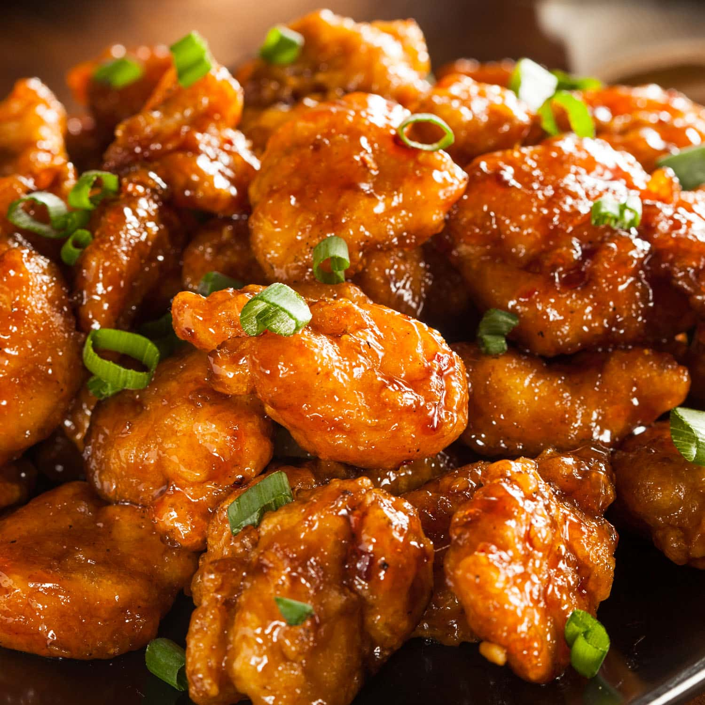

General Tso's Chicken

A genuinely mouthwatering dish with an Asian kick that will knock your chopsticks off!
Don't be fooled by other General Tsao impostors: this is simply the best
Chinese chicken you will ever have. With a flair of peanut oil, a streak of sesame, a dash of orange,
and a sweet spot for hot, this is sure to be a favorite. Just don't
forget to deep-fry twice! Serve with steamed broccoli and white rice.
Ingredients
- 4 cups vegetable oil for frying
- 1 egg
- 1 1/2 pounds boneless, skinless chicken thighs, cut into 1/2 inch
cubes
- 1 teaspoon salt
- 1 teaspoon white sugar
- 1 pinch white pepper
- 1 cup cornstarch
- 2 tablespoons vegetable oil
- 3 tablespoons chopped green onion
- 6 dried whole red chillis
- 1 strip orange zest
- 1/2 cup white sugar
- 1/4 teaspoon ground ginger
- 3 tablespoons chicken broth
- 1 tablespoon rice vinegar
- 1/4 soy sauce
- 2 teaspoons semsame oil
- 2 tablespoons peanut oil
- 2 teaspoons cornstarch
- 1/4 cup water
Instructions
- Heat 4 cups vegetable oil in a deep-fryer or large saucepan to 375 degrees F (190 degrees C).
- Beat the egg in a mixing bowl. Add the chicken cubes; sprinkle with salt, 1 teaspoon sugar, and white pepper;
mix well. Mix in 1 cup of cornstarch a little bit
at a time until the chicken cubes are well coated.
- In batches, carefully drop the chicken cubes into the hot oil one by one, cooking until they turns golden
brown and begin to float, about 3 minutes. Remove
the chicken and allow to cool as you fry the next batch. Once all of the chicken has been fried, refry the
chicken, starting with the batch that was cooked
first. Cook until the chicken turns deep golden brown, about 2 minutes more. Drain on a paper towel-lined
plate.
- Heat 2 tablespoons vegetable oil in a wok or large skillet over high heat. Stir in the green onion, garlic,
whole chiles, and orange zest. Cook and stir a minute
or two until the garlic has turned golden and the chiles brighten. Add 1/2 cup sugar, the ginger, chicken
broth, vinegar, soy sauce, sesame oil, and peanut
oil; bring to a boil and cook for 3 minutes.
- Dissolve 2 teaspoons of cornstarch into the water, and stir into the boiling sauce. Return to a boil and cook
until the sauce thickens and is no longer cloudy
from the cornstarch, about 1 minute. Stir the chicken into the boiling sauce. Reduce heat to low and cook for
a few minutes until the chicken absorbs some
of the sauce.